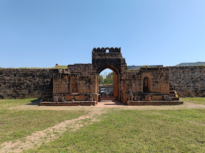

Bhadravati Fort
Bhandak Fort
The Bhadrawati Fort is located In heart of Bhadrawati City. This historical monument was made by the Gond king Bhankyasing across 3 acres of land. There is a big gate to the front of the fort, and all four sides are surrounded by huge walls. There is also a deep ancient well at the center of the fort. The locals say that the fort developed over 2000 years ago. Outside of the forth there are a few houses in which local residents live. Some structural stones are present in near area.
History

Bhadravati, located about 27 km from Chandrapur on the Warora Road, is a historically and culturally significant town known for its Hindu, Buddhist, and Jain heritage. Important attractions include Varadvinayak Temple, Vijasan Caves, Bhadranag Temple, Bhandak Fort, Deulwada, and Gavarala, reflecting the unity and diversity of Indian culture.
Historically known as Bhadrak, the town is home to the ancient Bhadranag Temple, believed to date back to the 4th century. Though much of the original structure has been damaged over time, it remains an important historical site.
Just 2 km from Bhadravati lies Gavarala Hill, which houses the famous Varadvinayak Temple and a six-foot-tall idol of Lord Ganesha, regarded as one of the Ashtavinayakas of Vidarbha. Nearby, Vijasan Hill features ancient Buddhist caves, including a large central cave flanked by two smaller caves, showcasing the region's rich archaeological heritage.